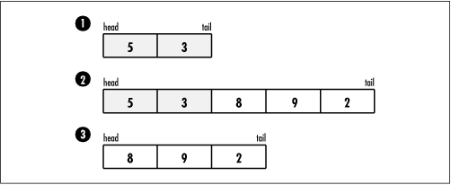

6.4 Description of Queues
The
distinguishing characteristic of a queue is that it stores and
retrieves data in a first-in,
first-out, or FIFO , manner. This means that the first
element placed in the queue is the first to be removed. A
convenient way to think of a queue is as a line at the post
office. In fact, anyone who has been to England knows that to
form a line there is known colloquially as "queuing up." As
the line grows, newcomers join in at the tail. When a clerk
becomes available, the person at the head of the line goes
next. In computing, to place an element at the tail of a
queue, we enqueue it; to remove
an element from the head, we dequeue it (see Figure
6.2). Sometimes it is useful to inspect the element at the
head of a queue without actually removing it, in which case we
peek at it.

|